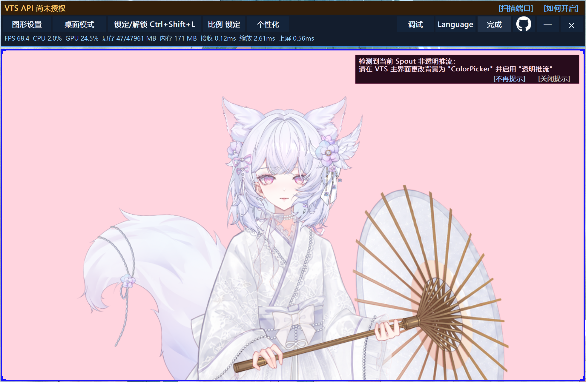
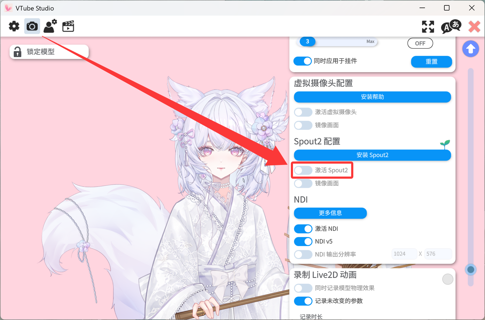
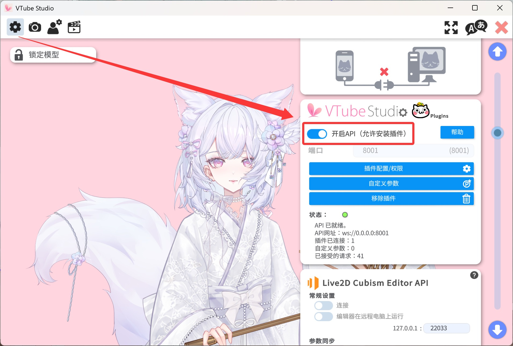
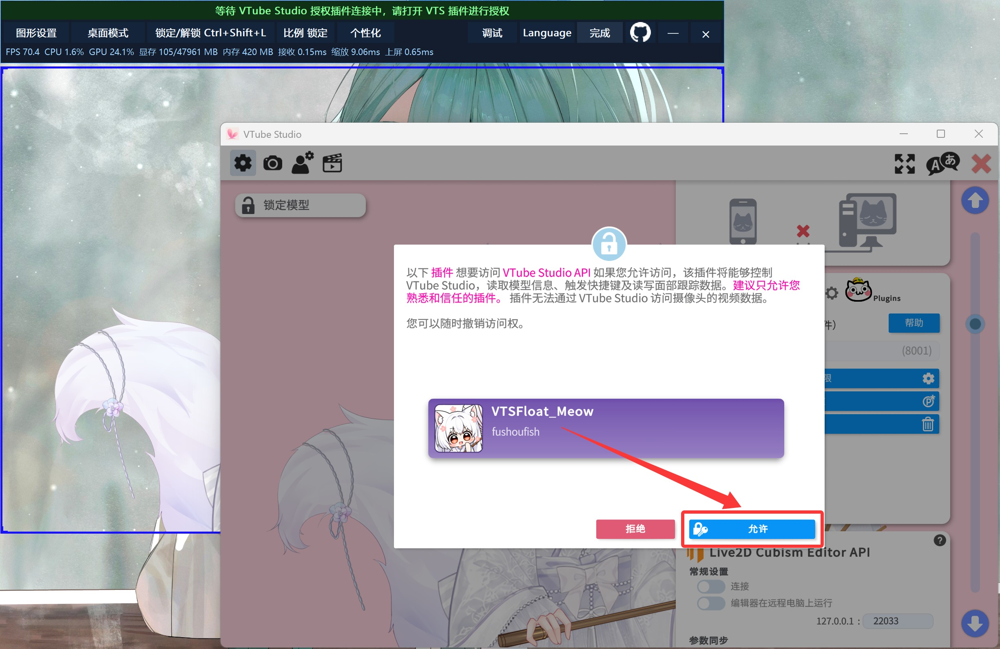
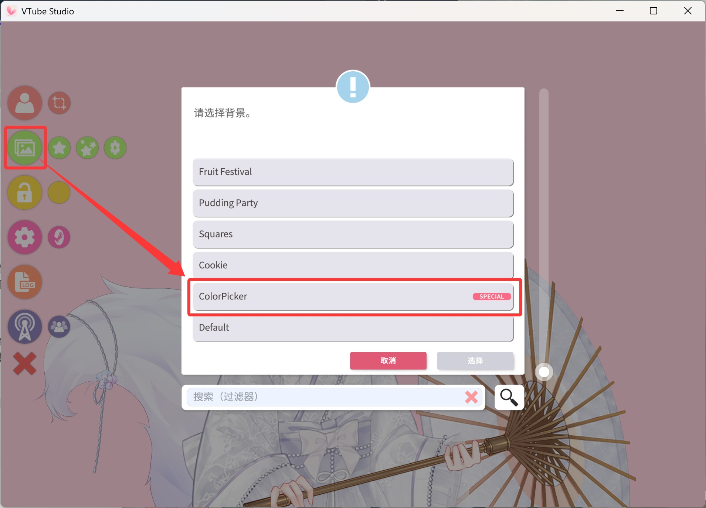
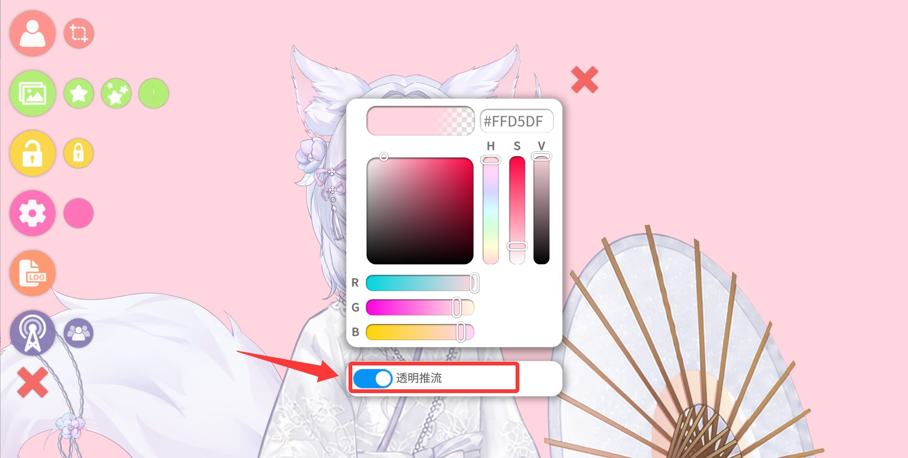

前往 GitHub
前往 GitHub 1.
自定义调整边框颜色粗细
可自由设置模型窗口的边框颜色和边框粗细。
根据你的使用习惯调整模型的显示与互动方式
可自由设置模型窗口的边框颜色和边框粗细。
可调整模型平时显示的不透明度，并选择适合当前显示器的界面缩放比例。
可设置鼠标经过模型时的透明程度，并调整自动触发区域向外扩展的距离。
可在模型窗口内框选并保存多个独立的鼠标触发区域。
可选择多个鼠标离开触发范围后播放的模型表情，并设置对应的播放时长。
按照下面的步骤完成启动 设置和自定义
脚本会主动从注册表寻找 Steam 中的 VTube Studio 路径或者由你手动选择路径

完成下面 4 项设置后即可开始接收透明模型
用于将 VTube Studio 的视频流推送至脚本

用于脚本获取实时渲染帧数 实现悬停更改模型表情等功能 如默认端口非 8001 请在脚本提示中手动点击“扫描端口”按钮


用于将获取到的视频流透明化 输出到脚本当中


调整好模型窗口后点击「完成」进行锁定；默认使用 Ctrl+Shift+L 快捷键锁定或解锁，也可以在工具栏中重新设置快捷键。
理论上支持 VTube Studio 的多人联动！当画布内存在模型以外的内容时，除空背景外，任何没有透明图层的区域都会被判定为“模型区域”。如果添加了天气等特效或粒子效果，会干扰角色模型的“触碰隐藏”“移开播放表情”等功能，导致这些功能无法正常使用。此时需要借助框选范围工具，手动限定角色模型的触发区域。
当独显（高性能显卡）运行在极限负载的程序或游戏中时 VTSFloat_Meow 输出的透明模型可能出现异常卡顿 极限负载状态会最大占用独显的渲染队列 显存带宽和调度时间 导致模型渲染 共享纹理接收以及 Windows 透明窗口合成都可能得不到及时执行 从而出现掉帧 延迟甚至短暂卡死
录屏主要在 GPU 内部完成 而 VTSFloat_Meow 还依赖 Windows 桌面透明窗口合成
VTSFloat_Meow 的 Spout2 接收和模型缩放已经通过 D3D11 在 GPU 内完成 但最后仍需由 Windows 桌面合成器显示透明窗口 独显满载时桌面合成得不到足够调度 因此比主要在 GPU 内部工作的录屏软件更容易卡顿
纯 GPU 的 DirectComposition 同样依赖桌面合成 甚至可能出现 Present 长时间阻塞 除非注入游戏内部绘制 但会带来反作弊和兼容风险
请调整高负载程序或游戏的性能开销 特别针对显卡高负载的设置请降低其配置进行运行 特别留意类似“帧率上限”相关的设置 这将极大占用显卡的性能开销 可以将其调整至 60 帧或者其他更低的帧数进行尝试
因此 GPU 处理加 Windows 透明窗口上屏 是目前更稳定的非注入方案之一
如果游戏出现卡顿可以先降低画质和帧率上限 或把 VTube Studio Spout2 与 VTSFloat_Meow 切换到核显或节能 GPU
画面在 GPU 之间传递 最后交给 Windows 桌面合成器
*VTSFloat_Meow 与 VTube Studio 会自动对齐至同一 GPU，以确保画面共享正常工作
本程序不会注入任何游戏或应用，也不会读取游戏画面或参与游戏渲染。
本程序可完全离线运行，不会主动访问互联网；VTube Studio API 功能仅通过 localhost 与本机 VTube Studio 通信。
本程序不会访问 VTube Studio 使用的摄像头或其他连接设备。
接收到的模型画面仅在本机 GPU 与 Windows 桌面合成链路中处理，不会上传或录制保存。
README 中的性能建议 技术栈和构建信息
测试平台 AMD Ryzen 7 9800X3D / DDR5-6400 CL28
影响性能的因素包括 VTS 模型面数、渲染特效、挂件数量、物理效果及系统中的其他应用。采集过程中已尽量避免不平衡因素，包括暂停动捕。
VTS原生分辨率：VTSM固定480p时，VTS由4K降至480p，帧率约180→240，延迟3.04→0.43ms。接收始终很快，但高分辨率原生纹理需读取更多像素并承担更重的缩小滤波，所以即使输出尺寸不变，高VTS画布仍增加GPU负担。这说明VTS源尺寸仍是次要影响因素。若模型没有明显画质收益，可降低VTS输出换取稳定帧率。
VTSM分辨率：VTS固定480p时，VTSM由480p升至4K，帧率约240→48，延迟0.62→17.66ms。接收耗时变化很小，增长主要来自GPU缩放和Windows透明窗口上屏；1440p后负担明显增加，4K时两者成为主要瓶颈。GPU占用升高的同时，桌面合成调度也会进一步限制帧率。因此VTSM处理和提交的像素量，比VTS输入尺寸更直接决定性能。
总结：两端越接近，越能减少无效缩放，使帧率和延迟更稳定；但对齐率不是唯一标准。相同对齐率下，低输出仍更快，4K即使完全对齐也需处理大量像素。日常推荐1280×720，兼顾清晰度、低延迟和高帧率；细节优先可选1920×1080。否则不建议长期使用高分辨率输出与高分辨率缩放，并应让VTS与VTSM的分辨率尺寸尽量接近。
在 1080p 对齐的分辨率下，日常模型映射延迟几乎无感
自由使用，也让改进继续开放
本项目采用 GNU General Public License v3.0（GPLv3）发布。
您可以使用、研究、修改和重新分发本程序；如果公开分发修改版或衍生版本，需要遵守 GPLv3 并提供对应源代码。
查看 GPLv3 完整条款Spout2 采用 BSD 2-Clause License。重新分发源码时须保留版权、许可条件和免责声明；重新分发二进制时，也须在随附文档或其他材料中保留这些内容。
Viewer.js 采用 MIT License。所有第三方组件继续适用各自的许可证。
查看第三方许可证当前版本 v1.2 正式版
v1.2 已进入正式发布阶段
源码和构建脚本可以前往 GitHub 查看
前往 GitHub